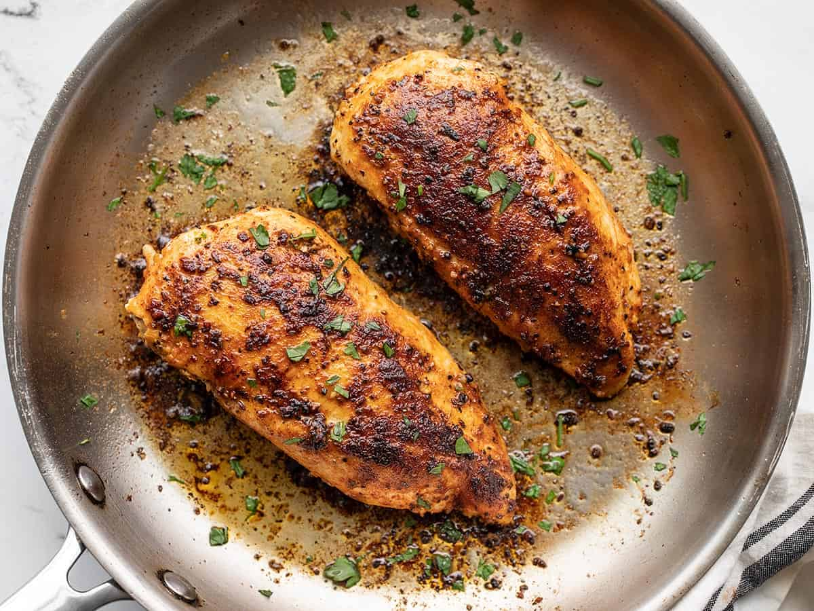

Pan Seared Chicken Breast

Description
Pan seared chicken breast is the perfect meal for anyone who needs a quick and delicious protein boost. Although many may have memories of dry, overcooked chicken breast from their youth,
this recipe is sure to make one's mouth water with a perfect pan sear and soft, tender chicken, destroying the image of mediocre chicken breast that still remains for many. Little is necessary
besides the chicken, oil, and some seasoning, so be sure to give this recipe a try when you're low on time and ready to break the stereotype!
Ingredients
- Chicken Breast
- Olive oil
- Spices and seasoning
Steps
- Slice the chicken breasts in half to make them smaller (you can skip this if the breasts are already small). This helps them cook evenly and quickly. Next, dry each half well with a paper towel.
- In a small bowl, stir the garlic powder, smoked paprika, onion powder, oregano, salt, pepper, and cayenne together. Season the chicken breasts with olive oil before sprinkling the spice mixture over both sides.
- Heat the olive oil in a large, deep skillet over medium-high heat. Place the chicken in the pan and cook until a browned, golden crust forms. Flip, reduce the heat, and cook until the juices run clear. Add the butter to the skillet and take it off of the heat.
- Let the chicken breast rest, then serve.